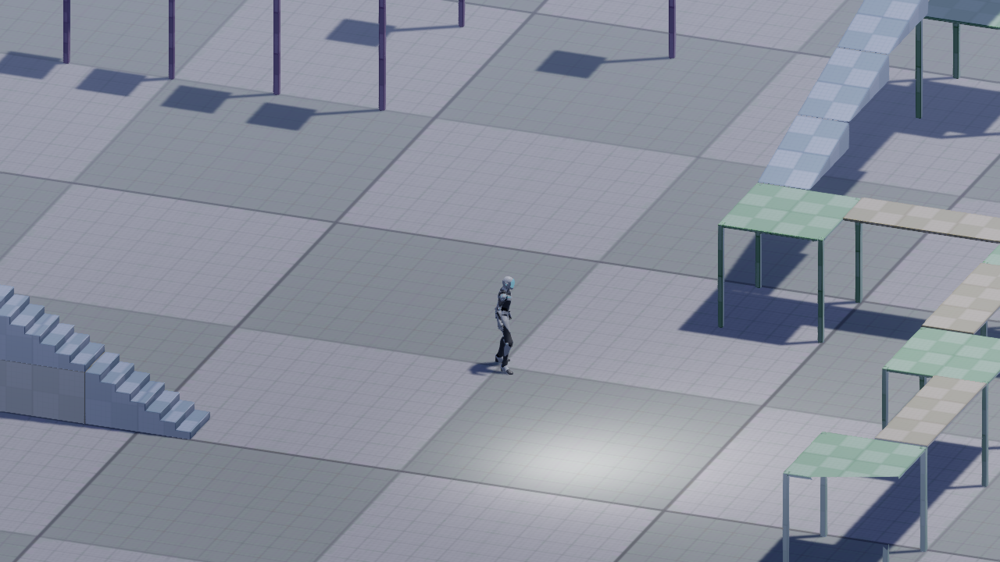
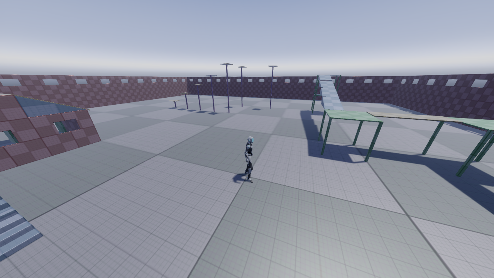

Cameras
Beginner Designer
Cameras capture your scene and display it to the player. Without cameras, you can't see anything in your game.
You can have an unlimited number of cameras in your scene.
Create a camera in Game Studio
In the Scene Editor, right-click and select Camera, then choose the kind of camera you want to create (perspective or orthographic).
Game Studio creates an entity with a camera component attached.
Alternatively, select the entity you want to be a camera, and in the Property Grid, click Add component and select Camera.
Camera properties

| Property | Description |
|---|---|
| Projection | The type of projection used by the camera (perspective or orthographic) |
| Field of view (degrees) | The vertical field of view used for perspective projection |
| Orthographic size | The height of the orthographic projection (the orthographic width is automatically calculated based on the target ratio). This has the effect of zooming in and out |
| Near clip plane | The nearest point the camera can see |
| Far clip plane | The furthest point the camera can see |
| Custom aspect ratio | Use a custom aspect ratio you specify. Otherwise, automatically adjust the aspect ratio to the render target ratio |
| Custom aspect ratio | The aspect ratio for the camera (when the Custom aspect ratio option is selected) |
| Slot | The camera slot used in the graphics compositor. For more information, see Camera slots |
Perspective and orthographic cameras
Perspective cameras provide a "real-world" perspective of the objects in your scene. In this view, objects close to the camera appear larger, and lines of identical lengths appear different due to foreshortening, as in reality. Perspective cameras are most used for games that require a realistic perspective, such as third-person and first-person games.
With orthographic cameras, objects are always the same size, no matter their distance from the camera. Parallel lines never touch, and there's no vanishing point. Orthographic cameras are most used for games with isometric perspectives, such as some strategy, 4X, or role-playing games.

| Perspective | Orthographic |
|---|---|
 |
 |
Field of view (perspective mode only)
When the camera is set to perspective mode, the field of view changes the camera frustum, and has the effect of zooming in and out of the scene. At high settings (90 and above), the field of view creates stretched "fish-eye lens" views. The default setting is 45.
| Field of view: 45 (default) | Field of view: 90 |
|---|---|
|
 |
Orthographic size (orthographic mode only)
When the camera is set to orthographic mode, the orthographic size has the effect of zooming in and out.
| Orthographic size: 10 (default) | Orthographic size: 50 |
|---|---|
 |
 |
Near and far planes
The near and far planes determine where the camera's view begins and ends.
The near plane is the closest point the camera can see. The default setting is 0.1. Objects before this point aren't drawn.
The far plane, also known as the draw distance, is the furthest point the camera can see. Objects beyond this point aren't drawn. The default setting is 1000.
Stride renders the area between the near and far planes.

| Near plane 0.1 (default); far plane: 50 | Near plane: 7; far plane 1000 (default) |
|---|---|
 |
 |
| With a low far plane value, objects in the near distance aren't drawn. | With a high near plane value, objects close to the camera aren't drawn. |
Camera scripts
You can control cameras using camera scripts. Stride includes three camera script templates: an FPS camera script, a side-scrolling camera script, and a basic camera controller script.
Add a camera script in Game Studio
In the Asset View (in the bottom by default), click Add asset > Scripts and choose the camera script you want to add.
In the Scene Editor, select the entity with the camera you want to control.
In the Property Grid (on the right by default), click Add component and select the camera script you want to use.

Game Studio adds the camera script to the entity.
For more information about how to create and use scripts, see Scripts.
Camera slots
Camera slots link the graphics compositor to the cameras in your scene. You bind each camera to a slot, then define which slot the compositor uses. This means you can change the root scene or graphics compositor without having to assign new cameras each time.
For more information, see Camera slots.
Render a camera to a texture
You can send a camera's view to a texture and use the texture on objects in your scene. For example, you can use this to display part of your scene on a TV screen in the same scene, such as security camera footage. For more information, see Render textures.